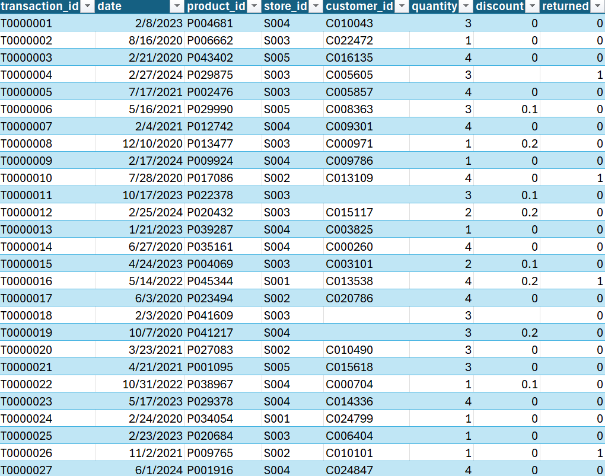
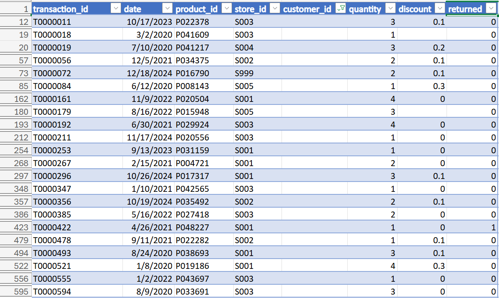
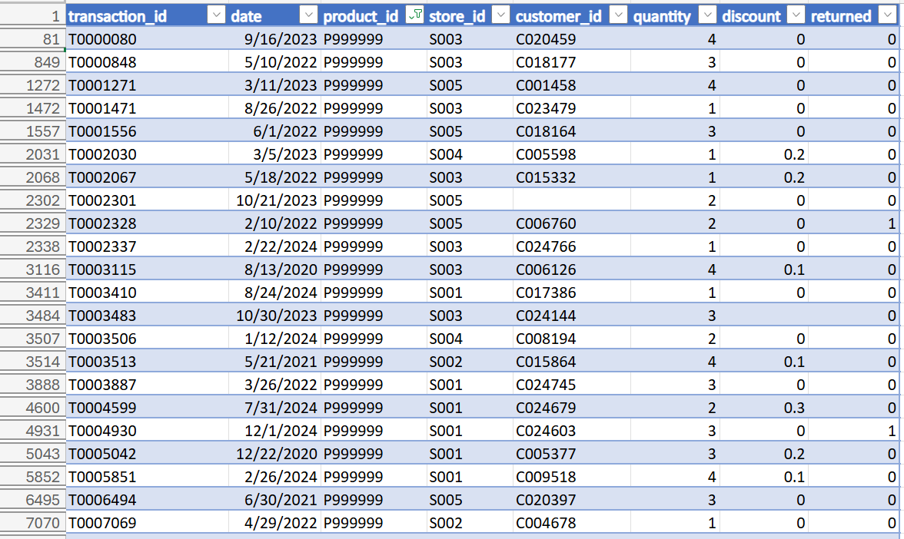
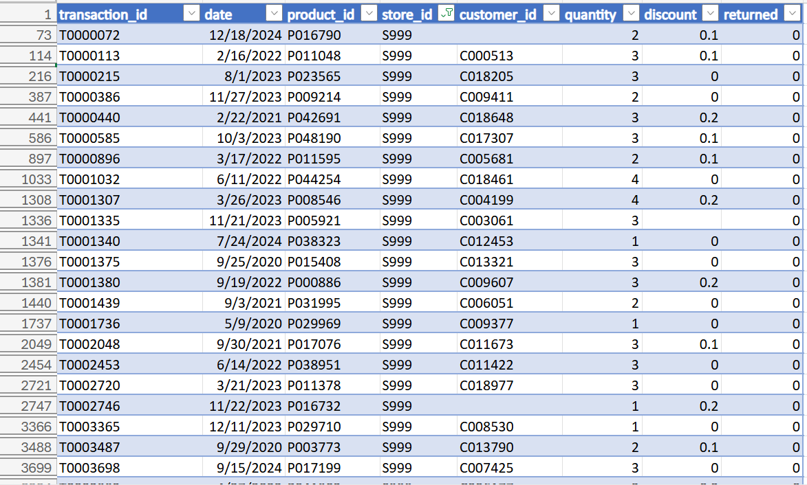

1. Profit Margins
Products with 50%+ profit margins generate most of the revenue and sales, making them key drivers of profitability.
Data Quality Assessment • Sales Insights • Business Intelligence Dashboard
This project explores an e-commerce sales dataset containing approximately 50,000 transaction records, alongside customer, product and store information. The work covers data-quality checks, issue documentation and sales performance analysis.
Source data, validation checks and records that require further investigation.
The following screenshots document the data-quality checks performed on the e-commerce sales dataset. Identified issues were recorded for further investigation rather than automatically deleting potentially useful transactions.

The original dataset contains approximately 50,000 transaction records, including transaction, date, product, store, customer, quantity, discount and return information.
The raw data was reviewed before performing validation and cleaning checks.
The dataset was reviewed for duplicate records, missing values, invalid references and inconsistent data.
The following issues were identified and documented during the data-quality checks.

Finding: 1,844 sales records had missing customer IDs.
Action: Records were retained and flagged for further investigation rather than deleted.

Finding: 2,583 discount values were blank. The observed discount range was 0 to 0.3, and 29,907 records had a zero discount.
Action: Blank discount values were retained and flagged instead of being replaced with an assumed value.

Finding: Product IDs were compared with the product master table using XLOOKUP. P99999 was identified as an unmatched product ID.
Action: The record was retained and flagged for investigation rather than deleted.

Finding: Store IDs were compared with the store master table. S999 was identified as an unmatched store ID.
Action: The record was retained and flagged for further investigation.
The review identified four areas requiring attention: missing customer IDs, missing discount values, an unmatched product ID and an unmatched store ID.
Flagging these records preserves the original data while making quality issues visible for further investigation and validation.
An overview of sales performance, customer metrics, product performance, margins, discounts and seasonality.
I used Microsoft Power BI to build this sales dashboard, organize key performance indicators, and visualize revenue, orders, product performance, profitability and seasonal trends.
.png)
This dashboard preview is an image, so its charts and filters are not interactive. An interactive Power BI report can be embedded here later using an appropriate published report link.
Highlights derived from the dashboard analysis.
Products with 50%+ profit margins generate most of the revenue and sales, making them key drivers of profitability.
Loss-making products drive significant sales volume but generate less revenue, indicating a need to review pricing and discount strategies.
Products with 0–50% profit margins contribute little to revenue and sales, suggesting a need to review their pricing and performance.
Most revenue and orders come from full-price sales, showing strong customer demand without relying on discounts.
As discounts increase, revenue and orders decline, suggesting that deeper discounts may reduce revenue without significantly boosting sales.
All major product categories generate consistent revenue across seasons, indicating stable year-round demand.
Accessories sell best in Winter, Shoes in Spring and Summer, and Tops in Fall, helping optimize seasonal inventory planning.
The business relies on full-price, high-margin sales, while deeper discounts reduce revenue and orders, suggesting a need to minimize unnecessary promotions.